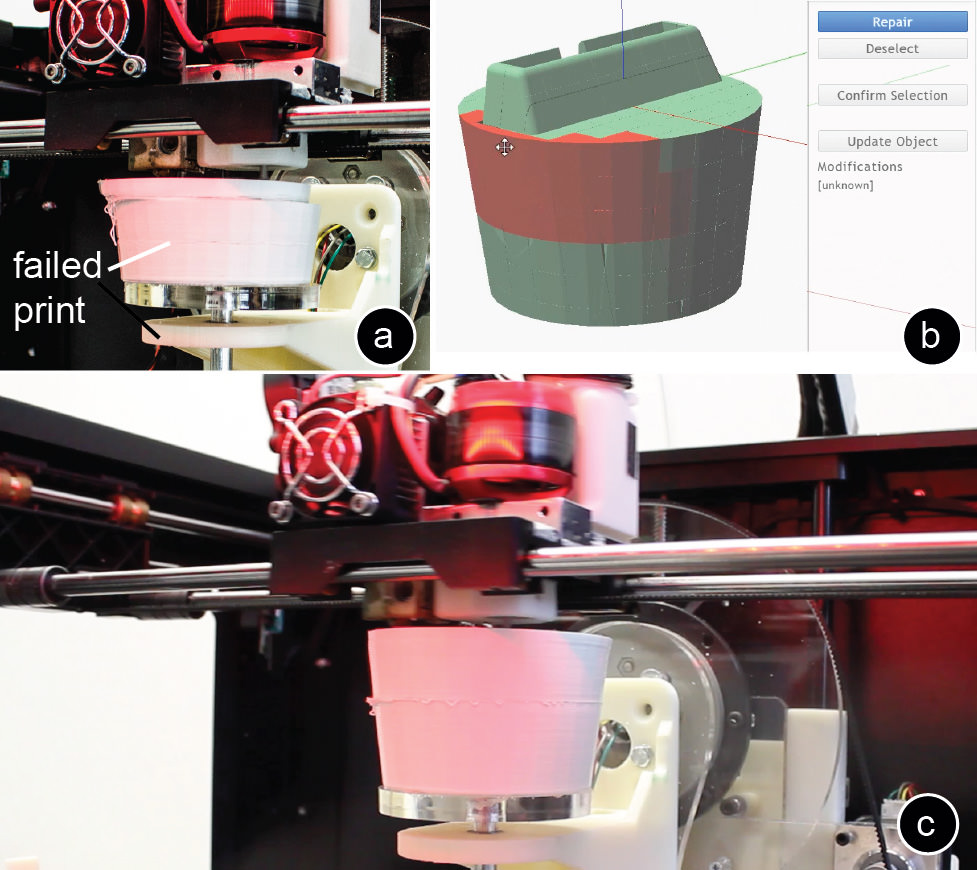
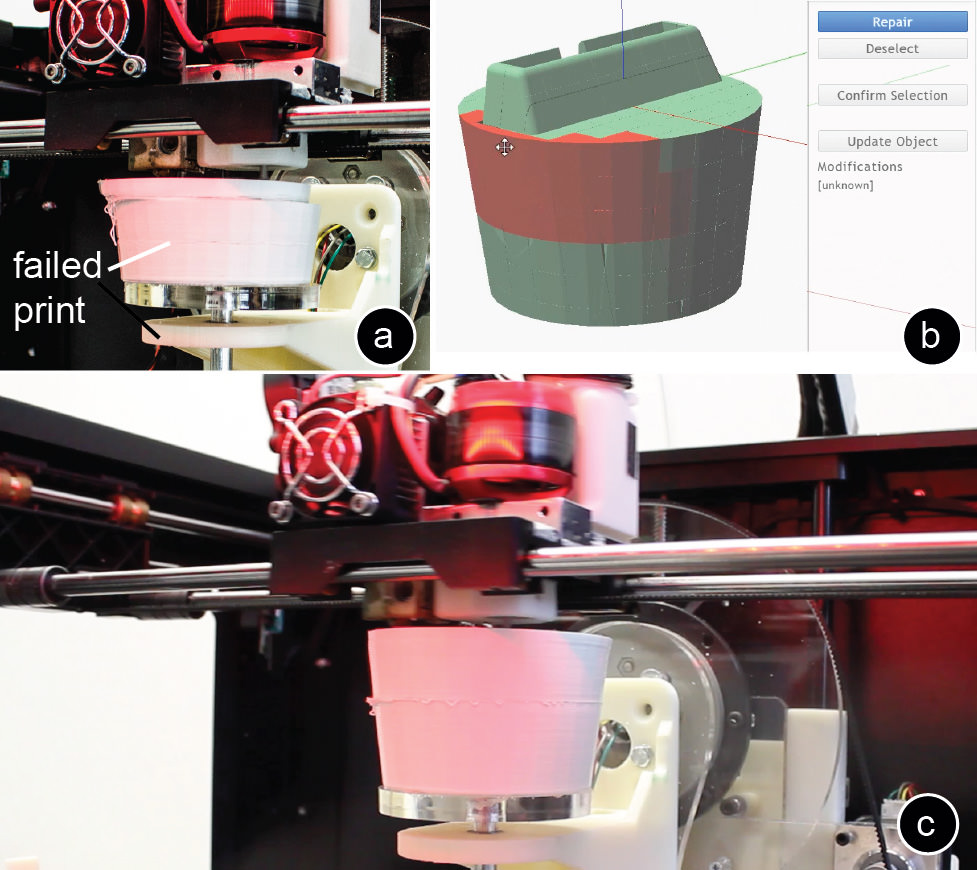

Publication
Mueller, S., Im, S., Gurevich, S., Teibrich, A., Pfisterer, L., Guimbretière, F., and Baudisch, P.
Patching Physical Objects.
In Proceedings of
UIST ’14
, pp. 273-280.
Demo at UIST'14
DOI
Paper
Video
Slides
Talk
Press
Video
Talk
Slides


1 / 63

2 / 63

3 / 63

4 / 63

5 / 63

6 / 63

7 / 63

8 / 63

9 / 63

10 / 63

11 / 63

12 / 63

13 / 63

14 / 63

15 / 63

16 / 63

17 / 63

18 / 63

19 / 63

20 / 63

21 / 63

22 / 63

23 / 63

24 / 63

25 / 63

26 / 63

27 / 63

28 / 63

29 / 63

30 / 63

31 / 63

32 / 63

33 / 63

34 / 63

35 / 63

36 / 63

37 / 63

38 / 63

39 / 63

40 / 63

41 / 63

42 / 63

43 / 63

44 / 63

45 / 63

46 / 63

47 / 63

48 / 63

49 / 63

50 / 63

51 / 63

52 / 63

53 / 63

54 / 63

55 / 63

56 / 63

57 / 63

58 / 63

59 / 63

60 / 63

61 / 63

62 / 63

63 / 63

Patching Physical Objects
 Figure 1: To minimize material consumption and to reduce waste during design iteration, we propose patching the existing object rather than reprinting it from scratch. (a) First, our software calculates which part changed, then (b) a mill removes outdated geometry, followed by a print head that prints the new geometry.
Personal fabrication is currently a one-way process: once an object has been fabricated with a 3D printer, it cannot be changed anymore. Any change requires printing a new version from scratch. The problem is that this approach ignores the nature of design iteration, i.e. that in subsequent iterations large parts of an object stay the same and only small parts change. This makes fabricating from scratch feel unnecessary and wasteful.
In this paper, we propose a different approach: instead of re-printing the entire object from scratch, we suggest patching the existing object to reflect the next design iteration. We built a system on top of a 3D printer that accomplishes this: Users mount the existing object into the 3D printer, then load both the original and the modified 3D model into our software, which in turn calculates how to patch the object. After identifying which parts to remove and what to add, our system locates the existing object in the printer using the system’s built-in 3D scanner. After calibrating the orientation, a mill first removes the outdated geometry, then a print head prints the new geometry in place.
Since only a fraction of the entire object is refabricated, our approach reduces material consumption and plastic waste (for our example objects by 82% and 93% respectively).
Patching Physical Objects: Life-Long Design
While we focus primarily on design iterations, objects may require a patch:
1. immediately because of failed 3D printing
2. minutes to hours later because of a new design iteration
3. days to months later because the object breaks
4. months to years later because of changing requirements
Being able to patch an existing object allows for what we call life-long design and effectively reduces material consumption and waste.
Hardware for patching physical objects
Figure 2 shows the hardware setup that we integrated into an existing 3D printer (MakerBot Replicator 2X): a mill with suction for removing geometry, a 5-axis rotating platform for additional degrees of freedom, and a depth camera for 3D scanning and alignment.
Figure 2: Hardware for patching physical objects.
subtractive fabrication: We added a motor with mill bit and suction on the side of the MakerBot extruder. We built on top of the hardware suggested in the Scotty [17] paper, but optimized the component layout to fit onto a single carriage so as to maximize the build volume.
5 axis printing: Off-the-shelve 3D printers only have 3-axis and thus can only remove and add geometry from the top of an object. This often requires removing more material than necessary. To add and remove geometry from the side of an object, we added a 5-axis extension in the form of a dual axis rotating platform.
3D scanning: Our system 3D scans the existing object to align it with the next iteration of the 3D model. For 3D scanning, we mounted a depth camera (model: Creative Senz3D) to the frame of the 3D printer and use our dual-axis rotating platform to turn the object 360°.
Walkthrough
We illustrate how patching physical objects allows for life-long design at the example of a phone charging dock that fits into the coffee holder of a car.
#1 Patching immediately because of failed 3D printing
While printing the initial version of the phone dock, the 3D print fails half way through: the stepper motors accidentally leaves out a step, which leads to a layer shift in all following layers (Figure 3a). The user stops the print and instead of trashing the failed print, patches the object.

Figure 3: (a) Failed print. (b) The user selects the failed part with the repair brush. (c) Patching.
As can be seen in Figure 3b, the user loads the corresponding 3D model into our software, then uses the “repair” brush to select the part that did not print correctly (selection is done based on a raster grid, the raster resolution can be changed by the user). No alignment with 3D scanning is necessary in this case since the failed print is still on the printing platform. After the user hits the “patch” button, our system instructs the mill to remove the failed upper layers, and then continues the regular print. Note that patching this failed print is different from [14] in that our system is able to not only resume a print job, but also to remove falsely printed geometry. Fixing the print required 34.43cm3 material (with 10% infill), saving 39% compared to reprinting it from scratch, and preventing 29.67cm3 of waste from trashing the object. During milling, we had to remove 7.54cm3.
#2 minutes to hours later because of a new design iteration
After printing the initial version of the phone dock, the user notices that the home button is half-way covered and thus hard to operate (Figure 1). To fix the problem, the user adds a cut out for the home button to the 3D model, then loads it into our software together with the original 3D model. The user mounts the existing phone dock into the 3D printer (using double-sided tape) and hits the “patch” button. To locate the existing phone dock in the 3D printer, our system 3D scans it. After alignment, our system instructs the mill to remove the outdated geometry around the mount, and then instructs the 3D print head to create the new mount directly on the remaining geometry. This patch required only 2.39cm3, saving 96% material compared to reprinting from scratch, preventing 56.56cm3 of waste. During milling, we removed 2.54cm3 material.
After testing the phone dock in the car, the user decides to use the remaining space in front of the phone mount to store a coin for unlocking shopping carts that he otherwise always loses. In Figure 4, the user adds the coin slot to the phone dock 3D model, then hits the “patch” button.
Figure 4: (a,b) Our system finds the optimal orientation to minimize printing material and waste. (d) Milling.
This time, the system uses its dual-axis rotating platform to minimize material consumption by rotating the phone dock so that only a small part needs to be removed and reprinted. Adding the coin slot required only 1.46cm3 material, saving 97% material compared to reprinting it from scratch, and preventing 56.40cm3 waste. During milling, we had to remove 1.43cm3 material.
#3 patching days to months later because the object breaks
One day, the user accidentally breaks the phone dock when putting his bag onto the side seat. The user decides to fix it (Figure 5). The user first loads the corresponding 3D model and using the “repair” brush marks the part that broke off. Our system patches the phone dock by milling off protruding geometry and then reprinting all missing parts. Repairing the phone dock took 2.86cm3 material, saving 95% compared to reprinting from scratch, preventing 56.44cm3 of waste. During milling, we removed 2.15cm3 of material.
Figure 5: (a) The user accidentally broke the object. (b) The user marks the parts that need repair. (c) Our system then repairs the object using mill and print head.
#4 months to years later because of changing requirements
A year later, the user buys a new phone that is too large for the mount (Figure 6a).
Figure 6: (a) The user’s new phone is too large, thus the user changes the model. (b) Changes. (c) Patched object.
Since the charging dock still works, the user decides to patch it. Patching the phone dock required only 10.56cm3 of material, effectively saving 81% compared to reprinting it from scratch, and preventing 56.44cm3 waste. During milling, we had to remove 9.56cm3.
Minimizing Material Consumption and Waste
In the digital world, determining how much volume has changed is merely subtracting one model from the other, but implementing these changes in the physical world often requires additional volume (and thus material) to be removed. The reason for this are physical constraints:
size of print/mill head: the print head and mill head define a volume that can collide with existing geometry (Figure 7)—making it necessary to remove more material than actually changed. The smaller the print and mill head, the less additional material needs to be removed.
Figure 7: (a) The print head causes a collision. (b) The system removes additional geometry, to (c) then reprint.
alignment of mill bit and extruder: As shown in Figure 8a, if the extruder nozzle and the mill bit operate on the same layer, this can cause a collision of the mill bit with already printed material.
Figure 8: (a) In this setup, the mill bit causes a collision. (b) Correct alignment of mill and print head.
The mill bit thus needs to operate one layer above the extruder. This however, comes with the physical constraint that the print head always has to operate in the “shadow” of the mill, i.e. the mill has to first remove material, and then the print head can follow. In Figure 7, for instance, we rotate the object by 180° to be able to remove the colliding geometry with the mill. Afterwards, we rotate the object back for printing. One solution to avoid this problem is to add a mechanism to the carriage that can lift up the mill bit and the extruder, i.e. when the system mills the extruder is moved up and vice versa. A second option is to only add a mechanism to either the mill head or the print head, however this requires moving one of the heads the double distance.
degrees of freedom of the print/mill head: While 3-axis 3D printers are the most common, they can only remove and print geometry from the top of an object. If an object’s geometry changes close to its bottom, all upper geometry needs to be removed (Figure 9a). This creates a lot of waste and requires large amounts of printing material. In contrast, printers with higher degrees of freedom, such as 5-axis machines, can print and remove geometry from the side of an object (Figure 9b).
Figure 9: 3-axis vs. 5 axis for adding a handle to this watering can.
size of build plate: If the bottom of an object is patched using 5-axis milling/printing, the size of the build plate determines how much volume is accessible (Figure 10).
Figure 10: (a) The larger the build plate, the less volume is accessible. (b) One voxel build plate.
While making the base plate smaller allows for increasingly more volume to become accessible, the only way to reach the entire volume is to work with a one-voxel build plate (conceptual drawing in Figure 10b). The basic idea is to place the first voxel on the vertically aligned build plate and then through rotation of the build plate build up the object voxel by voxel from the side. However, due to the limited capabilities of today’s 3D printers, we were not able to implement the one-voxel build plate.
support material: Current 3D printing technology requires printing support material underneath structures with overhangs >45°. While for this paper, we did not explore the issue of support material, we think it is a challenge worth further research, especially when printing above gaps.
Contribution, Benefits, and Limitations
The main contribution of this paper is a system that allows patching the geometry of an existing object rather than printing it from scratch. The system combines subtractive and additive fabrication in a single integrated process to remove and add geometry to an object, and uses 3D scanning for alignment. In addition, our dual-axis rotating platform can patch geometry from both the top of an object and the side. Our approach not only saves material, but also reduces plastic waste—making 3D printing more sustainable.
On the flipside, patching an object’s geometry is subject to the following limitations: (1) physical constraints: due to the size of the print head and its limited degrees of freedom, regions that surround the to be modified area sometimes also need to be partially removed. (2) high precision necessary: print head, mill, and 3D scanning need to be calibrated to each other in the sub-millimeter range (see section “3D scanning”). (3) stress-resistance: by rotating the object, not all layers are printed in the same orientation, making the object potentially less stress resistant (see [26] for a discussion). (4) suction: we had good results with our suction, but not 100% of the chips were removed.
Implementation
To help readers replicate our results, we use the following section to explain the details of our hardware extension and the software implementation.
Rotating platform for 5 axis printing
We designed the dual axis rotating platform so as to maximize the build volume in the 3D printer. Our design replaces the standard Makerbot platform. Key to our design is the use of a slewing ring searing from Igus (PRT-02-30-AL) for the Y axis. This bearing is designed to accept both radial and axial load and creates a rigid connection between the rotating platform and its support. Both axes are driven by a stepper motor attached (a NEMA 17 stepper motor, 200 steps per 360°). The Y axis has a transmission ratio of 17.7:1, while the transmission ratio for the Z axis is 8.13:1. Both motors are controlled by an Arduino Uno.
The carriage with the mill, camera, and suction is based on the hardware from the Scotty [23] project. However, to maximize the build volume, we fit both the print head and the mill head onto the same carriage and removed the down-facing RGB camera. For 3D scanning, we mounted a depth camera (model: Creative Senz3D) to the casing of the MakerBot, which faces sideward onto the object.
Software
In the next section, we describe the algorithm that our system uses to determine which parts need to be removed by the mill and which need to be reprinted.
Determining what changed in the model:
Our system identifies geometry that needs to be removed by uniting the existing object and the next iteration, and then subtracting the next iteration (Figure 11a).
Figure 11: Calculating (a) what to add, (b) to remove.
Similarly, our system identifies geometry that needs to be added by uniting the existing object and the next iteration and then subtracting the existing object (Figure 11b).
Calculating the volume which collides with mill or print head
As discussed in section “Minimizing material usage”, the size of the mill and print head can make it necessary to remove more material than actually changed to avoid collisions. Figure 12 illustrates our algorithm with an example of the geometry that needs to be added from the previous figure: (a,b) First, our system identifies the volume that needs to be empty so that the print head can reach all locations required to add the part. To do this, our software takes the 3D geometry of the print head and moves it along the surface of the part that should be added. All of the volumes are added up (minkowski sum).
Figure 12: Checking collision volume for the geometry that should be added (from the previous figure).
(c) In the next step, our software determines if there are any collisions. For this, our software intersects the volume that should be empty with the existing geometry of the object. If the resulting volume is empty, no collision exists and the system can perform the patch without removing any additional geometry. If the volume is not empty as in the example shown in Figure 12c), a part of the new geometry cannot be added due to a collision. Thus, the part of the existing object that causes the collision has to be removed too.
The question remains if the additional part that needs to be removed causes collisions itself. The algorithm thus repeats all steps until no additional collisions exist anymore. (d) It then adds up all collision volumes, (e) removes them, and then (f) recreates them together with the geometry that needs to be added.
Minimizing collision volume with 5-axis printing
In 3-axis printing only one option exists to change the geometry in a certain location, but 5-axis printing can achieve the same result in several ways, i.e. by rotating the object at different angles, resulting in different collision volumes, and thus requiring different amounts of geometry to be milled away and reprinted. Our system therefore finds the angles that create least waste and consume least material.
For this, our system iteratively builds a tree structure of all potential solutions and applies a breadth first search, i.e. we stop pursuing a branch as soon as it creates more waste and requires more material than the current best solution (Figure 13).
Figure 13: In the example shown, the optimal solution to minimize waste and material consumption is to rotate the object 90°.
Our algorithm starts by (a) calculating the difference between the existing object and the next iteration (as described in Figure 11). (b) It then calculates the collision volume for each potential angle (as described in Figure 12c). If the object contains several patches in different locations, the algorithm builds the next layer in the tree by repeating steps (a) and (b), i.e. testing all potential rotation angles for the second part that needs to be changed and again calculating the collision volume.
After traversing the valid options, our algorithm picks the solution that consumes least material and produces least waste. In the case shown in Figure 13, rotating the object by 90° produces zero waste and only requires a fraction of the material than changing it in a 0° position—making the 90° angle the optimal solution.
As testing all potential rotation angles is computationally expensive, we only test a set of discrete angles rather than a continuous space. The number of angles tested is a trade-off between accuracy and computation time (we currently test in 1° distances).
Order of executing changes
Our system first removes all collision geometries and geometries that no longer exist in the next iteration. After that, the system prints the geometry that needs to be added.
Calculating the tool paths for the mill and print head
Milling: For each part that needs to be removed, our system calculates the mill path. For this, our system slices the part that should be removed in layers (we use a two wing flute mill bit for milling plastic, and mill layers with 0.6mm height). Our system implements the slicing by intersecting the 3D model of the part that should be removed with horizontal planes at increasing heights. For each slice, our system then calculates the bounding box. From the bounding box, our system generates the tool path for the mill in the form of g-code commands. Moving the mill exactly along the contour of the layer could further optimize our current implementation.
3D printing: Our system generates the 3D print tool path for each part by sending the geometry in .stl file format to the MakerBot slicer miraclegrue, which in turn generates a g-code file that we automatically read back into our system.
Collision prevention during travel
By default, the 3D printer moves the shortest path between two print locations, which can lead to collisions with existing geometry (Figure 14). To avoid collisions, our system first detects the highest point of existing geometry on the path (based on the initial 3D scan of the object). It then lowers the base plate to move the point below the print head. Finally, the system instructs the print head to move to the other location, and afterwards brings the base plate back up.
Figure 14: To avoid collision of the print head with existing geometry, we lower the base plate accordingly.
Closing open surfaces / covering infill
To save time in 3D printing, objects are often printed with a solid surface and a sparse infill pattern.
Figure 15: Closing open infill areas.
During a change, the existing surface of an object can be removed and parts of the infill form the new outside surface (Figure 15). To cover the infill pattern, our system removes the top infill layer in addition and reprints it as solid to close the surface.
3D scanning and alignment
We take multiple snapshots with the camera while rotating the object. Each snapshot contains the depth value in mm for each pixel. We combine all snapshots into a single point cloud, taking into account the position of the camera, the rotational center of the platform, and the 3D printer coordinate system. We then call the command line interface of CloudCompare [4] to register the object geometry with the point cloud (Figure 16).
Figure 16: 3D scanning for alignment.
Unfortunately, current depth cameras, such as the CreativeSenz3D we use, are not accurate enough to achieve a seamless patch as this requires a resolution below the 200 microns of current consumer FDM printers. This is why the objects in our example walkthrough show small defects at the interface of the patch.
In our setup, scanning accuracy is a trade-off between time and precision. By scanning the object from additional angles, we can collect more data and thereby increase the scanning resolution. In addition, since our algorithm combines all data from the point cloud (using the standard POSIT algorithm), not every point needs to be perfectly accurate.
Discussion
In the next section, we discuss insights we gained while patching a range of different objects.
Material savings for different types of changes
The material saved between two design iterations highly depends on the type of change. For local patches, i.e. changes that only affect a small part of the object in a specific area, material savings are typically high. For global patches, such as scaling the entire object, material savings tend to be small. In addition, they are technically more difficult to achieve.
Time saving during design iteration
Patching physical objects does not only lead to material savings, but in most cases also to time savings. However, the time saved depends on the type of patch as patching requires both time for printing and time for milling. One option to further reduce fabrication time is to use a saw for cutting off outdated parts in a single piece rather than using a mill to remove material layer-by-layer. However, a saw limits the type of removals that can be achieved.
5 axis vs. 3+2 axis printing
While our hardware is capable of full 5-axis printing, our algorithm currently implements 3+2 axis printing, i.e. we first rotate the object, then apply the patch rather than rotating and fabricating at the same time, which would allow for additional material savings. The benefit of 3+2 axis printing is that it allows us to re-use the default MakerBot slicer as we only print in the x-y plane and do not print 3D curves. Using industrial 5-axis printing software, our system could be extended to full 5-axis patching.
Taping the object into the printer vs. using a mount
While double-sided tape is sufficient to mount objects with a large bottom area (such as the phone dock in the walkthrough), it is not sufficient for objects with a small bottom area. For smaller objects, we developed a mount that can be opened and closed with a screw (Figure 17). One limitation of an additional mount is that it reduces the reachable area by the print head. To avoid the problem, the user can orient the object in the mount in different ways according to the part that is being patched. The efficacy of the tape bond also depends on the shearing forces during milling.
Figure 1: To minimize material consumption and to reduce waste during design iteration, we propose patching the existing object rather than reprinting it from scratch. (a) First, our software calculates which part changed, then (b) a mill removes outdated geometry, followed by a print head that prints the new geometry.
Personal fabrication is currently a one-way process: once an object has been fabricated with a 3D printer, it cannot be changed anymore. Any change requires printing a new version from scratch. The problem is that this approach ignores the nature of design iteration, i.e. that in subsequent iterations large parts of an object stay the same and only small parts change. This makes fabricating from scratch feel unnecessary and wasteful.
In this paper, we propose a different approach: instead of re-printing the entire object from scratch, we suggest patching the existing object to reflect the next design iteration. We built a system on top of a 3D printer that accomplishes this: Users mount the existing object into the 3D printer, then load both the original and the modified 3D model into our software, which in turn calculates how to patch the object. After identifying which parts to remove and what to add, our system locates the existing object in the printer using the system’s built-in 3D scanner. After calibrating the orientation, a mill first removes the outdated geometry, then a print head prints the new geometry in place.
Since only a fraction of the entire object is refabricated, our approach reduces material consumption and plastic waste (for our example objects by 82% and 93% respectively).
Patching Physical Objects: Life-Long Design
While we focus primarily on design iterations, objects may require a patch:
1. immediately because of failed 3D printing
2. minutes to hours later because of a new design iteration
3. days to months later because the object breaks
4. months to years later because of changing requirements
Being able to patch an existing object allows for what we call life-long design and effectively reduces material consumption and waste.
Hardware for patching physical objects
Figure 2 shows the hardware setup that we integrated into an existing 3D printer (MakerBot Replicator 2X): a mill with suction for removing geometry, a 5-axis rotating platform for additional degrees of freedom, and a depth camera for 3D scanning and alignment.
Figure 2: Hardware for patching physical objects.
subtractive fabrication: We added a motor with mill bit and suction on the side of the MakerBot extruder. We built on top of the hardware suggested in the Scotty [17] paper, but optimized the component layout to fit onto a single carriage so as to maximize the build volume.
5 axis printing: Off-the-shelve 3D printers only have 3-axis and thus can only remove and add geometry from the top of an object. This often requires removing more material than necessary. To add and remove geometry from the side of an object, we added a 5-axis extension in the form of a dual axis rotating platform.
3D scanning: Our system 3D scans the existing object to align it with the next iteration of the 3D model. For 3D scanning, we mounted a depth camera (model: Creative Senz3D) to the frame of the 3D printer and use our dual-axis rotating platform to turn the object 360°.
Walkthrough
We illustrate how patching physical objects allows for life-long design at the example of a phone charging dock that fits into the coffee holder of a car.
#1 Patching immediately because of failed 3D printing
While printing the initial version of the phone dock, the 3D print fails half way through: the stepper motors accidentally leaves out a step, which leads to a layer shift in all following layers (Figure 3a). The user stops the print and instead of trashing the failed print, patches the object.

Figure 3: (a) Failed print. (b) The user selects the failed part with the repair brush. (c) Patching.
As can be seen in Figure 3b, the user loads the corresponding 3D model into our software, then uses the “repair” brush to select the part that did not print correctly (selection is done based on a raster grid, the raster resolution can be changed by the user). No alignment with 3D scanning is necessary in this case since the failed print is still on the printing platform. After the user hits the “patch” button, our system instructs the mill to remove the failed upper layers, and then continues the regular print. Note that patching this failed print is different from [14] in that our system is able to not only resume a print job, but also to remove falsely printed geometry. Fixing the print required 34.43cm3 material (with 10% infill), saving 39% compared to reprinting it from scratch, and preventing 29.67cm3 of waste from trashing the object. During milling, we had to remove 7.54cm3.
#2 minutes to hours later because of a new design iteration
After printing the initial version of the phone dock, the user notices that the home button is half-way covered and thus hard to operate (Figure 1). To fix the problem, the user adds a cut out for the home button to the 3D model, then loads it into our software together with the original 3D model. The user mounts the existing phone dock into the 3D printer (using double-sided tape) and hits the “patch” button. To locate the existing phone dock in the 3D printer, our system 3D scans it. After alignment, our system instructs the mill to remove the outdated geometry around the mount, and then instructs the 3D print head to create the new mount directly on the remaining geometry. This patch required only 2.39cm3, saving 96% material compared to reprinting from scratch, preventing 56.56cm3 of waste. During milling, we removed 2.54cm3 material.
After testing the phone dock in the car, the user decides to use the remaining space in front of the phone mount to store a coin for unlocking shopping carts that he otherwise always loses. In Figure 4, the user adds the coin slot to the phone dock 3D model, then hits the “patch” button.
Figure 4: (a,b) Our system finds the optimal orientation to minimize printing material and waste. (d) Milling.
This time, the system uses its dual-axis rotating platform to minimize material consumption by rotating the phone dock so that only a small part needs to be removed and reprinted. Adding the coin slot required only 1.46cm3 material, saving 97% material compared to reprinting it from scratch, and preventing 56.40cm3 waste. During milling, we had to remove 1.43cm3 material.
#3 patching days to months later because the object breaks
One day, the user accidentally breaks the phone dock when putting his bag onto the side seat. The user decides to fix it (Figure 5). The user first loads the corresponding 3D model and using the “repair” brush marks the part that broke off. Our system patches the phone dock by milling off protruding geometry and then reprinting all missing parts. Repairing the phone dock took 2.86cm3 material, saving 95% compared to reprinting from scratch, preventing 56.44cm3 of waste. During milling, we removed 2.15cm3 of material.
Figure 5: (a) The user accidentally broke the object. (b) The user marks the parts that need repair. (c) Our system then repairs the object using mill and print head.
#4 months to years later because of changing requirements
A year later, the user buys a new phone that is too large for the mount (Figure 6a).
Figure 6: (a) The user’s new phone is too large, thus the user changes the model. (b) Changes. (c) Patched object.
Since the charging dock still works, the user decides to patch it. Patching the phone dock required only 10.56cm3 of material, effectively saving 81% compared to reprinting it from scratch, and preventing 56.44cm3 waste. During milling, we had to remove 9.56cm3.
Minimizing Material Consumption and Waste
In the digital world, determining how much volume has changed is merely subtracting one model from the other, but implementing these changes in the physical world often requires additional volume (and thus material) to be removed. The reason for this are physical constraints:
size of print/mill head: the print head and mill head define a volume that can collide with existing geometry (Figure 7)—making it necessary to remove more material than actually changed. The smaller the print and mill head, the less additional material needs to be removed.
Figure 7: (a) The print head causes a collision. (b) The system removes additional geometry, to (c) then reprint.
alignment of mill bit and extruder: As shown in Figure 8a, if the extruder nozzle and the mill bit operate on the same layer, this can cause a collision of the mill bit with already printed material.
Figure 8: (a) In this setup, the mill bit causes a collision. (b) Correct alignment of mill and print head.
The mill bit thus needs to operate one layer above the extruder. This however, comes with the physical constraint that the print head always has to operate in the “shadow” of the mill, i.e. the mill has to first remove material, and then the print head can follow. In Figure 7, for instance, we rotate the object by 180° to be able to remove the colliding geometry with the mill. Afterwards, we rotate the object back for printing. One solution to avoid this problem is to add a mechanism to the carriage that can lift up the mill bit and the extruder, i.e. when the system mills the extruder is moved up and vice versa. A second option is to only add a mechanism to either the mill head or the print head, however this requires moving one of the heads the double distance.
degrees of freedom of the print/mill head: While 3-axis 3D printers are the most common, they can only remove and print geometry from the top of an object. If an object’s geometry changes close to its bottom, all upper geometry needs to be removed (Figure 9a). This creates a lot of waste and requires large amounts of printing material. In contrast, printers with higher degrees of freedom, such as 5-axis machines, can print and remove geometry from the side of an object (Figure 9b).
Figure 9: 3-axis vs. 5 axis for adding a handle to this watering can.
size of build plate: If the bottom of an object is patched using 5-axis milling/printing, the size of the build plate determines how much volume is accessible (Figure 10).
Figure 10: (a) The larger the build plate, the less volume is accessible. (b) One voxel build plate.
While making the base plate smaller allows for increasingly more volume to become accessible, the only way to reach the entire volume is to work with a one-voxel build plate (conceptual drawing in Figure 10b). The basic idea is to place the first voxel on the vertically aligned build plate and then through rotation of the build plate build up the object voxel by voxel from the side. However, due to the limited capabilities of today’s 3D printers, we were not able to implement the one-voxel build plate.
support material: Current 3D printing technology requires printing support material underneath structures with overhangs >45°. While for this paper, we did not explore the issue of support material, we think it is a challenge worth further research, especially when printing above gaps.
Contribution, Benefits, and Limitations
The main contribution of this paper is a system that allows patching the geometry of an existing object rather than printing it from scratch. The system combines subtractive and additive fabrication in a single integrated process to remove and add geometry to an object, and uses 3D scanning for alignment. In addition, our dual-axis rotating platform can patch geometry from both the top of an object and the side. Our approach not only saves material, but also reduces plastic waste—making 3D printing more sustainable.
On the flipside, patching an object’s geometry is subject to the following limitations: (1) physical constraints: due to the size of the print head and its limited degrees of freedom, regions that surround the to be modified area sometimes also need to be partially removed. (2) high precision necessary: print head, mill, and 3D scanning need to be calibrated to each other in the sub-millimeter range (see section “3D scanning”). (3) stress-resistance: by rotating the object, not all layers are printed in the same orientation, making the object potentially less stress resistant (see [26] for a discussion). (4) suction: we had good results with our suction, but not 100% of the chips were removed.
Implementation
To help readers replicate our results, we use the following section to explain the details of our hardware extension and the software implementation.
Rotating platform for 5 axis printing
We designed the dual axis rotating platform so as to maximize the build volume in the 3D printer. Our design replaces the standard Makerbot platform. Key to our design is the use of a slewing ring searing from Igus (PRT-02-30-AL) for the Y axis. This bearing is designed to accept both radial and axial load and creates a rigid connection between the rotating platform and its support. Both axes are driven by a stepper motor attached (a NEMA 17 stepper motor, 200 steps per 360°). The Y axis has a transmission ratio of 17.7:1, while the transmission ratio for the Z axis is 8.13:1. Both motors are controlled by an Arduino Uno.
The carriage with the mill, camera, and suction is based on the hardware from the Scotty [23] project. However, to maximize the build volume, we fit both the print head and the mill head onto the same carriage and removed the down-facing RGB camera. For 3D scanning, we mounted a depth camera (model: Creative Senz3D) to the casing of the MakerBot, which faces sideward onto the object.
Software
In the next section, we describe the algorithm that our system uses to determine which parts need to be removed by the mill and which need to be reprinted.
Determining what changed in the model:
Our system identifies geometry that needs to be removed by uniting the existing object and the next iteration, and then subtracting the next iteration (Figure 11a).
Figure 11: Calculating (a) what to add, (b) to remove.
Similarly, our system identifies geometry that needs to be added by uniting the existing object and the next iteration and then subtracting the existing object (Figure 11b).
Calculating the volume which collides with mill or print head
As discussed in section “Minimizing material usage”, the size of the mill and print head can make it necessary to remove more material than actually changed to avoid collisions. Figure 12 illustrates our algorithm with an example of the geometry that needs to be added from the previous figure: (a,b) First, our system identifies the volume that needs to be empty so that the print head can reach all locations required to add the part. To do this, our software takes the 3D geometry of the print head and moves it along the surface of the part that should be added. All of the volumes are added up (minkowski sum).
Figure 12: Checking collision volume for the geometry that should be added (from the previous figure).
(c) In the next step, our software determines if there are any collisions. For this, our software intersects the volume that should be empty with the existing geometry of the object. If the resulting volume is empty, no collision exists and the system can perform the patch without removing any additional geometry. If the volume is not empty as in the example shown in Figure 12c), a part of the new geometry cannot be added due to a collision. Thus, the part of the existing object that causes the collision has to be removed too.
The question remains if the additional part that needs to be removed causes collisions itself. The algorithm thus repeats all steps until no additional collisions exist anymore. (d) It then adds up all collision volumes, (e) removes them, and then (f) recreates them together with the geometry that needs to be added.
Minimizing collision volume with 5-axis printing
In 3-axis printing only one option exists to change the geometry in a certain location, but 5-axis printing can achieve the same result in several ways, i.e. by rotating the object at different angles, resulting in different collision volumes, and thus requiring different amounts of geometry to be milled away and reprinted. Our system therefore finds the angles that create least waste and consume least material.
For this, our system iteratively builds a tree structure of all potential solutions and applies a breadth first search, i.e. we stop pursuing a branch as soon as it creates more waste and requires more material than the current best solution (Figure 13).
Figure 13: In the example shown, the optimal solution to minimize waste and material consumption is to rotate the object 90°.
Our algorithm starts by (a) calculating the difference between the existing object and the next iteration (as described in Figure 11). (b) It then calculates the collision volume for each potential angle (as described in Figure 12c). If the object contains several patches in different locations, the algorithm builds the next layer in the tree by repeating steps (a) and (b), i.e. testing all potential rotation angles for the second part that needs to be changed and again calculating the collision volume.
After traversing the valid options, our algorithm picks the solution that consumes least material and produces least waste. In the case shown in Figure 13, rotating the object by 90° produces zero waste and only requires a fraction of the material than changing it in a 0° position—making the 90° angle the optimal solution.
As testing all potential rotation angles is computationally expensive, we only test a set of discrete angles rather than a continuous space. The number of angles tested is a trade-off between accuracy and computation time (we currently test in 1° distances).
Order of executing changes
Our system first removes all collision geometries and geometries that no longer exist in the next iteration. After that, the system prints the geometry that needs to be added.
Calculating the tool paths for the mill and print head
Milling: For each part that needs to be removed, our system calculates the mill path. For this, our system slices the part that should be removed in layers (we use a two wing flute mill bit for milling plastic, and mill layers with 0.6mm height). Our system implements the slicing by intersecting the 3D model of the part that should be removed with horizontal planes at increasing heights. For each slice, our system then calculates the bounding box. From the bounding box, our system generates the tool path for the mill in the form of g-code commands. Moving the mill exactly along the contour of the layer could further optimize our current implementation.
3D printing: Our system generates the 3D print tool path for each part by sending the geometry in .stl file format to the MakerBot slicer miraclegrue, which in turn generates a g-code file that we automatically read back into our system.
Collision prevention during travel
By default, the 3D printer moves the shortest path between two print locations, which can lead to collisions with existing geometry (Figure 14). To avoid collisions, our system first detects the highest point of existing geometry on the path (based on the initial 3D scan of the object). It then lowers the base plate to move the point below the print head. Finally, the system instructs the print head to move to the other location, and afterwards brings the base plate back up.
Figure 14: To avoid collision of the print head with existing geometry, we lower the base plate accordingly.
Closing open surfaces / covering infill
To save time in 3D printing, objects are often printed with a solid surface and a sparse infill pattern.
Figure 15: Closing open infill areas.
During a change, the existing surface of an object can be removed and parts of the infill form the new outside surface (Figure 15). To cover the infill pattern, our system removes the top infill layer in addition and reprints it as solid to close the surface.
3D scanning and alignment
We take multiple snapshots with the camera while rotating the object. Each snapshot contains the depth value in mm for each pixel. We combine all snapshots into a single point cloud, taking into account the position of the camera, the rotational center of the platform, and the 3D printer coordinate system. We then call the command line interface of CloudCompare [4] to register the object geometry with the point cloud (Figure 16).
Figure 16: 3D scanning for alignment.
Unfortunately, current depth cameras, such as the CreativeSenz3D we use, are not accurate enough to achieve a seamless patch as this requires a resolution below the 200 microns of current consumer FDM printers. This is why the objects in our example walkthrough show small defects at the interface of the patch.
In our setup, scanning accuracy is a trade-off between time and precision. By scanning the object from additional angles, we can collect more data and thereby increase the scanning resolution. In addition, since our algorithm combines all data from the point cloud (using the standard POSIT algorithm), not every point needs to be perfectly accurate.
Discussion
In the next section, we discuss insights we gained while patching a range of different objects.
Material savings for different types of changes
The material saved between two design iterations highly depends on the type of change. For local patches, i.e. changes that only affect a small part of the object in a specific area, material savings are typically high. For global patches, such as scaling the entire object, material savings tend to be small. In addition, they are technically more difficult to achieve.
Time saving during design iteration
Patching physical objects does not only lead to material savings, but in most cases also to time savings. However, the time saved depends on the type of patch as patching requires both time for printing and time for milling. One option to further reduce fabrication time is to use a saw for cutting off outdated parts in a single piece rather than using a mill to remove material layer-by-layer. However, a saw limits the type of removals that can be achieved.
5 axis vs. 3+2 axis printing
While our hardware is capable of full 5-axis printing, our algorithm currently implements 3+2 axis printing, i.e. we first rotate the object, then apply the patch rather than rotating and fabricating at the same time, which would allow for additional material savings. The benefit of 3+2 axis printing is that it allows us to re-use the default MakerBot slicer as we only print in the x-y plane and do not print 3D curves. Using industrial 5-axis printing software, our system could be extended to full 5-axis patching.
Taping the object into the printer vs. using a mount
While double-sided tape is sufficient to mount objects with a large bottom area (such as the phone dock in the walkthrough), it is not sufficient for objects with a small bottom area. For smaller objects, we developed a mount that can be opened and closed with a screw (Figure 17). One limitation of an additional mount is that it reduces the reachable area by the print head. To avoid the problem, the user can orient the object in the mount in different ways according to the part that is being patched. The efficacy of the tape bond also depends on the shearing forces during milling.
 Figure 17: While double-sided tape is strong enough to hold objects with a large surface area, we use this mount for objects with a small surface area.
Conclusion
In this paper, we presented a system that can patch an existing physical object rather than reprinting it from scratch. We showed how combining subtractive and additive fabrication in 5-axis allows efficient patching of an object to minimize material consumption and plastic waste—making 3D printing more sustainable.
For future work, we want to explore how to patch more complex physical objects, such as those that are not only based on shape, but also exhibit behavior (e.g. kinematic mechanisms [4]). In addition, it would be interesting to apply the patching concept to different types of 3D printing techniques. Our current setup focuses on FDM 3D printing, but other technologies such as SLA/SLS exist.
Figure 17: While double-sided tape is strong enough to hold objects with a large surface area, we use this mount for objects with a small surface area.
Conclusion
In this paper, we presented a system that can patch an existing physical object rather than reprinting it from scratch. We showed how combining subtractive and additive fabrication in 5-axis allows efficient patching of an object to minimize material consumption and plastic waste—making 3D printing more sustainable.
For future work, we want to explore how to patch more complex physical objects, such as those that are not only based on shape, but also exhibit behavior (e.g. kinematic mechanisms [4]). In addition, it would be interesting to apply the patching concept to different types of 3D printing techniques. Our current setup focuses on FDM 3D printing, but other technologies such as SLA/SLS exist.